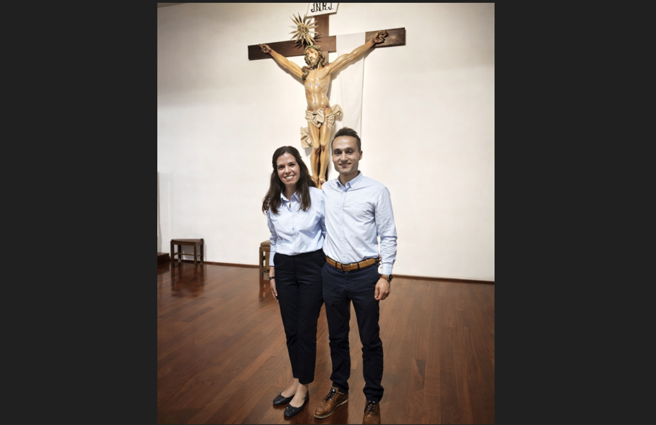
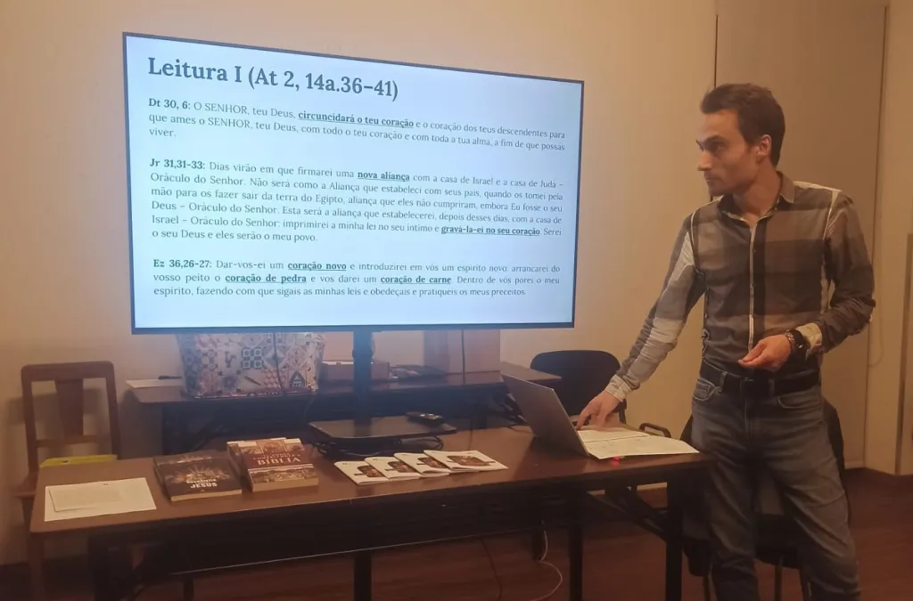
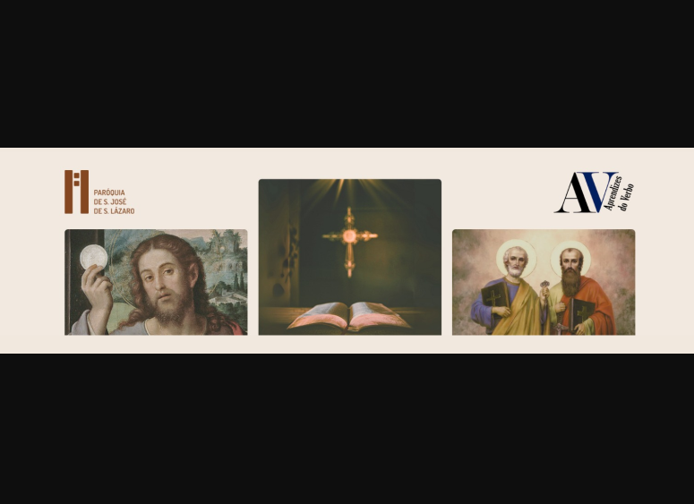

Movimento Paroquial
Aprendizes do Verbo
Movimento paroquial de São José de São Lázaro, Braga, fundado em 2024 por Hugo e Cristiana Bacelo, com o propósito de promover a formação bíblica de forma acessível, profunda e comunitária.
Leituras e Recursos
Galeria de Imagens


